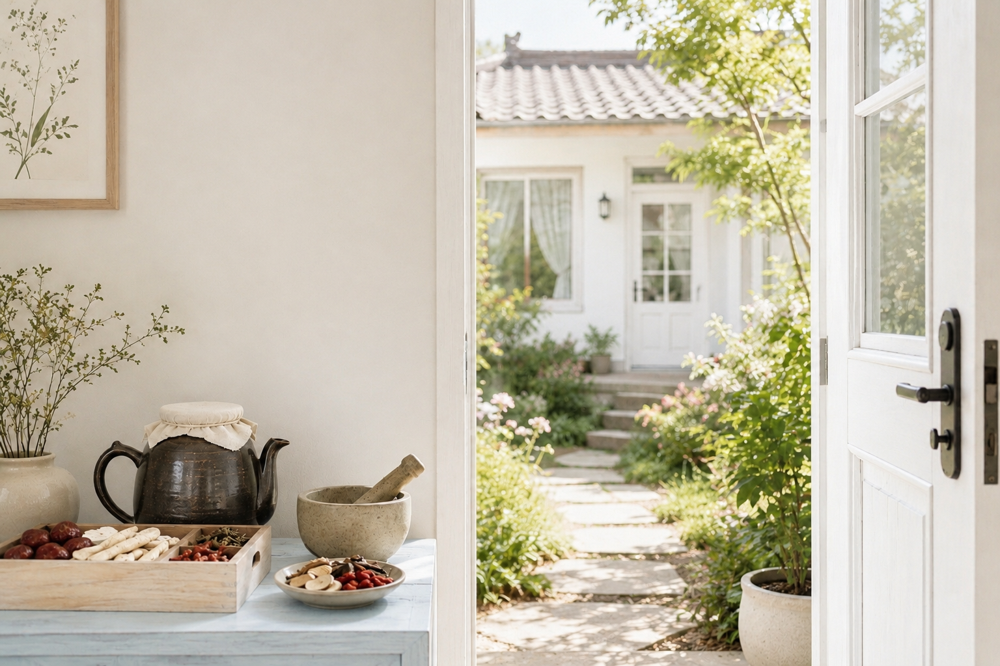
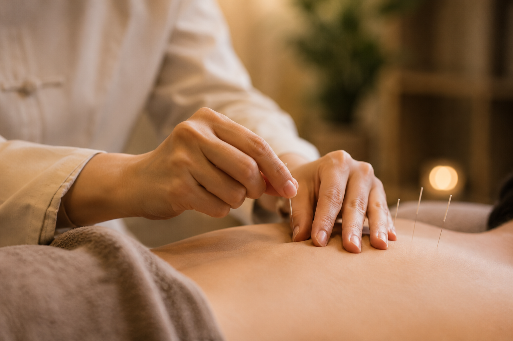

Women's Health한방 부인과
한방 부인과Specialised care for menstrual disorders, uterine conditions, fertility support, menopausal symptoms, and urinary incontinence.생리관련질환, 자궁질환, 불임치료 서포트, 폐경기 질환들, 요실금 등 여성 건강을 전문적으로 치료합니다.
Han Soo Kim visits nursing homes, retirement villages, and homes Sydney and Canberra — bringing traditional care to those who need it most.

Specialist TCM care across seven clinical areas, delivered in the comfort of your home. 7개 전문 진료 분야에서 방문 한의 진료를 제공합니다.

Specialised care for menstrual disorders, uterine conditions, fertility support, menopausal symptoms, and urinary incontinence.생리관련질환, 자궁질환, 불임치료 서포트, 폐경기 질환들, 요실금 등 여성 건강을 전문적으로 치료합니다.
Traditional Chinese medicine approaches to atopic dermatitis (eczema), allergic skin conditions, and excessive sweating of the hands and feet.아토피 피부염, 알러지성 피부 질환, 손발의 땀 과다 등을 한방으로 치료합니다.
Treatment for cold hands and feet, anaemia, digestive disorders, immune system support, energy restoration, and supportive care during cancer treatment.수족냉증, 빈혈, 소화기 질환, 면역력 증진, 원기회복과 식욕증진, 항암치료 서포트 등 내과 질환을 다룹니다.
Supporting children's health through growth and developmental delays, bedwetting (nocturnal enuresis), and recurrent colds.성장·발육 지연, 야뇨증, 잦은 감기 등 소아 건강 문제를 한방으로 지원합니다.
Care for urinary disorders, urinary tract infections (UTIs), and overactive bladder using traditional Chinese medicine.소변장애, 요로감염, 과민성 방광 등 비뇨기 질환을 한방으로 치료합니다.
Effective relief for acute and chronic pain, cancer-related pain, and neuralgia (nerve pain) using acupuncture and other TCM techniques.급·만성 통증, 암성 통증, 신경통을 침술 등 한방 기법으로 효과적으로 치료합니다.
Specialised TCM for elderly patients in aged-care settings: chronic pain, chronic cough, mobility difficulties, reduced vitality, and rehabilitation support.만성 통증, 만성 기침, 보행 불편, 체력 저하, 재활 관리 등 노인 환자를 위한 전문 한방 치료를 요양 시설에서 제공합니다.
Ready to arrange a visit? Contact us today. 방문 진료를 예약하시겠습니까? 지금 바로 연락 주세요.
Contact Us문의하기